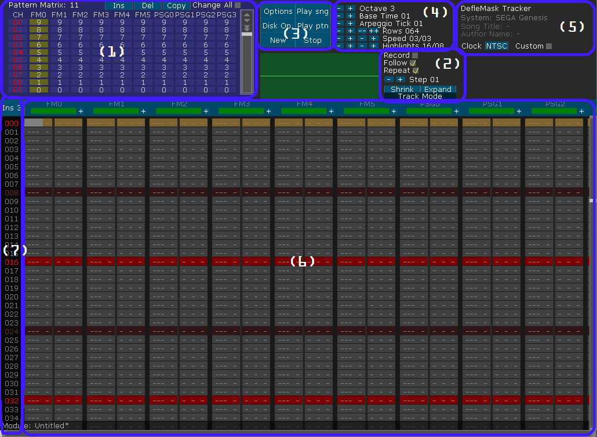
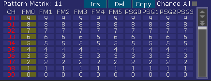
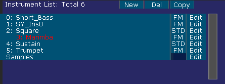
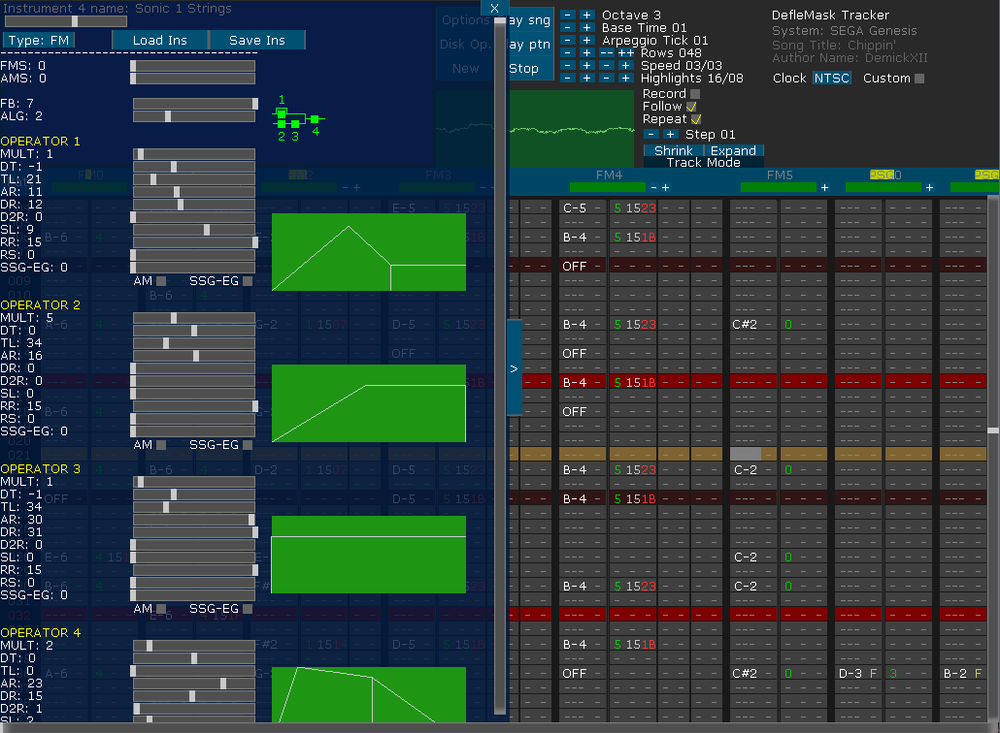
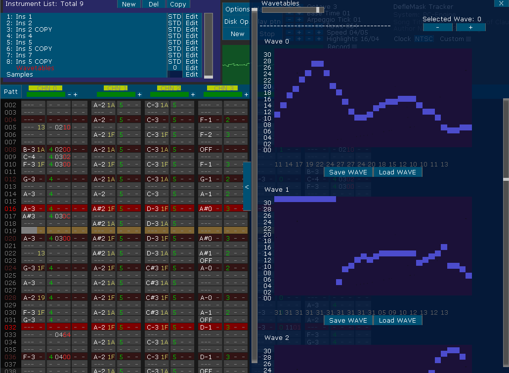
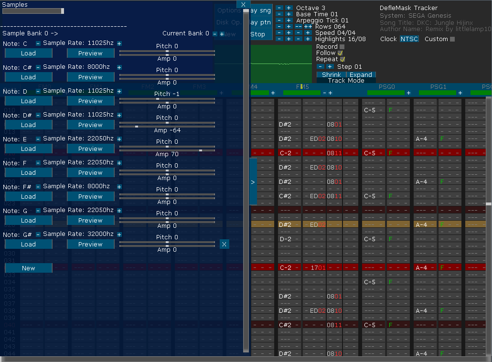

·
1: Pattern Matrix/Instrument List
In the pattern matrix you can arrange the patterns' positions. It is possible to create different orders for every channel, in this way you can create different loops, repetitions and mixes using all the channels at the same time. The pattern matrix is a sequencer, it will help you to control how your song will evolve trough time:

The buttons are explained in Controls.
If the Current System supports instruments and you press the configured key (check out "Controls") or the button over the indexes, the Pattern Matrix will switch into the Instrument List:

When you start a new song, there are no instruments at all, you have to click on "New" in order to create a new instrument.
After it is created, you can change the type by clicking on "FM" or "STD" if the current system supports both "FM" and "STD" instruments, STD instruments are controlled by envelopes generators, and FM instruments are controlled by its FM Registers.
You can enter on the properties of the instruments by clicking on edit button. Inside that subwindow, you can name it and edit its envelopes or FM values, load instruments, save instruments, etc.
If you want a copy of the instrument, you should click "Copy" button, and a copy will be created at the bottom of the list.
You can press "Del" to delete the bottom instrument.
If the current system supports PCM Samples, a PCM Samples line will appear. You can press "Edit" button in order to load and assign samples to notes. If the system supports samples, check out the system's section.
STD Instruments:

The STD Instruments are controlled by Macro Generators, you can draw any type of shape using the mouse, you can also copy notes or volume values and paste its inside the Macro, or set a Loop point by clicking in the bottom part of the envelope, you can remove that loop point with a click with the right mouse button. If the current system supports WAVE Channels, you can change the wave selected by the "Selected WAVE" display or by the button in the bottom of the instrument list. Remember that you can use the Arpeggio MACRO/ENVELOPE for the PCM channels too (in order to trigger a sample rapidly).
FM Instruments:

The FM Instruments are controlled by FM Registers, you can change its values by using sliders, for more information about the System FM values, check the System's section inside this manual.
WAVETABLE Instruments:

Samples:

You can load Wav files into DefleMask in order to use the PCM Capabilites of the current system selected, the wav files must have 16bits of depth.
You can use a max of 12 PCM sample instruments, however, in future versions of DefleMask this limit can be expanded.
You can change the Hz of a loaded sample by clicking on the "+" or "-" buttons for each sample, you can also modify it pitch and amplitude.
When you load the first sample, it is assigned to the C note, the second sample loaded will be assigned to the C# note, and so on.
In other words, you can obtain a full octave of samples, from C to B:
C, C#, D, D#, E, F, F#, G, G#, A, A#, B.
You can Preview a sample loaded clicking on "preview" button, or you can use the keyboard.
To replace a loaded sample, simply reload a new sample over the desired one.
To delete a sample, click on the "X". Only the lastest loaded sample can be deleted!, so, if you want to erease the first sample, you will need to erase the others. The samples are stored in a stack.
2: Options
Repeat: If it is checked, the song will start again when it reach the end.
Follow: If it is checked, the camera will follow the playing row.
Record: If it is checked, you can modify the patterns, you can check/uncheck it using the keyboard too (check out keyboard shortcuts for more information).
Step: The count of rows that the tracker will skip after a new data.
Shrink/Expand: This are global Shrink and Expand commands, they will double the size of the patterns and shrink/expand the information in the current project. You can do this locally using keyboard shortcuts.
NTSC/PAL/Custom: You can choose the global speed of the song, NTSC is 60hz and PAL is 50hz. You can also check "Custom" in order to set a custom clock speed value.
This is the main menu of DefleMask tracker, and clicking it you can:
·
Options: Under Options menu you can:
·System: Change the current system. Check the Supported Systems list at DefleMask Main.
·
About: Check some information about me and the tracker itself.
·
E. Wav: Export the current song, in real time, to a WAV file.
·
Keys: To customize your keyboard layout.
·
MIDI: A list of available MIDI IN devices will be shown, select a device as the default MIDI input controller. This setting will be saved. DefleMask will record multiple notes at the same time, this means that if you play a chord, various channels could recieve the input and the notes will be stored in the pattern sucessfully.
·Play sng: Plays the song from current pattern selected.
·Disk Op.: Under Disk Op. menu you can:
·L. DMF: Loads a DMF (DefleMask Format) into the tracker.
·L. [SYSTEM FORMAT]: Loads the compiled file, if the load is possible you can listen to the file.
·S. DMF: Saves a DMF (DefleMask Format).
·S. [SYSTEM FORMAT]: Saves a compiled file, ready to be listened on specific system architecture.
·L. Skin: Loads a new Skin into DefleMask.
·Cancel: Return to the previous menu.
·Play ptn: Plays only current pattern selected.
·New: Make a song from scratch, it will change his text to "Sure?", click again to confirm.
·Stop: Stop the song if it is playing.
·4: More Options
·Arpeggio Tick: The speed of the arpeggio command.
·
Rows: Total number of rows per pattern, "++" and "--" buttons will increase an decrease by 10.
·Octave: Input octave selector, can be changed by a keyboard shortcut.
·Base Time: The base time value multiplies the tick time value, to obtain longer tempos.
·
Speed: The total time of a even row and for a odd row.
·
Highlights: Rows in DefleMask are highlighted between two values, you can change the highlighted row numbers using this selector.
·
5: Song Information
In this block you can see the song information, like, Song Title, Author, Current selected system, engine speed of the song (NTSC, PAL, custom clock speed).
·
7: Indexes and Instrument List/Pattern Matrix Button
In this place DefleMask will show you the row number where you are working, this tab is over the patterns and semi-transparent, so you can move the view horizontally and it always be visible.
Over the indexes, there is the switch button between the Instrument List and the Pattern Matrix, you can do this also with a key (check out keyboard shortcut for more information).